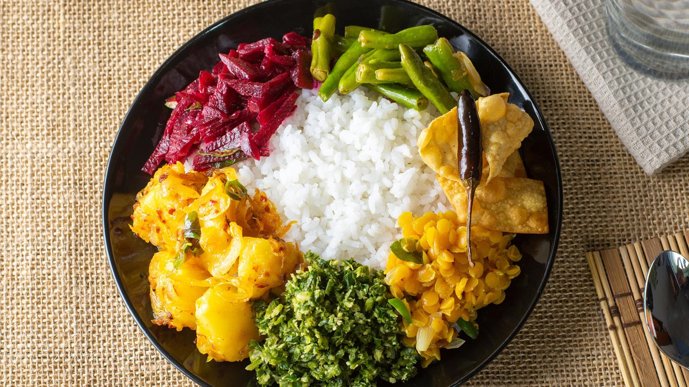

and i'm 67 years old.i'm now currently live in Jamaica. my favourite food is rice and curry.And my hobby is collecting rare country coins in free time.I'm now currently playing badminton for Jamaica.I choose Digi Tech cause i like to work on codes and it's seems fun to works on the computer.Html,Cssl and Blender, they are the tools that i'm know.I like to create a video games by myself in the feature.
I'm have someDedicated coder skilled in Python, JavaScript, and web development, seeking a full-time role to apply technical skills and problem-solving abilities.
Players score points by hitting the shuttlecock over the net so the other player cannot return it. A game is usually played to 21 points, and you must win by 2 points. Badminton is popular around the world, especially in countries like China, Indonesia, and Malaysia. It is also an Olympic sport.


In my dream garage, I would have a new Land Rover Defender, a BMW M3 Competition, and a Nissan Silvia S14. The Land Rover is strong and great for off-road adventures. The BMW M3 Competition is fast and powerful. The Nissan Silvia S14 adds cool JDM style and drifting vibes.
.jpg)


My favourite food is Sri Lankan rice and curry. It usually has rice with different curries like chicken, dhal, and vegetables, full of rich spices and flavour. Another favourite is kottu roti, a popular Sri Lankan street food made by chopping roti and mixing it with vegetables, egg, and meat on a hot pan. Both dishes are tasty, spicy, and very popular in Sri Lanka.
